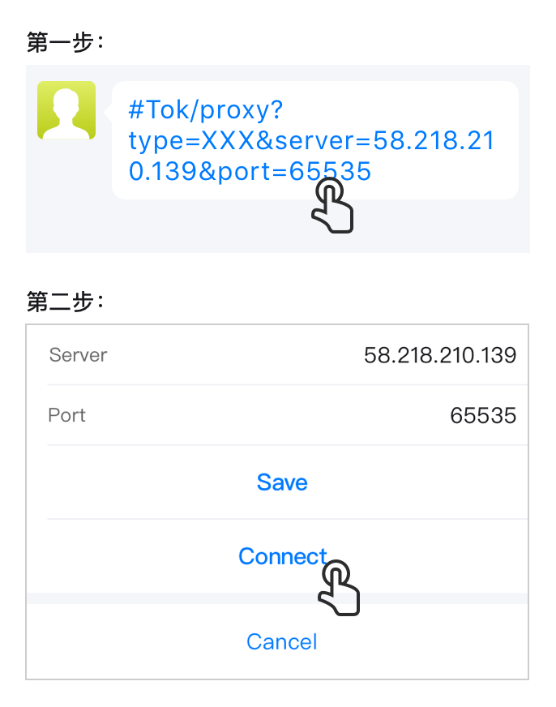
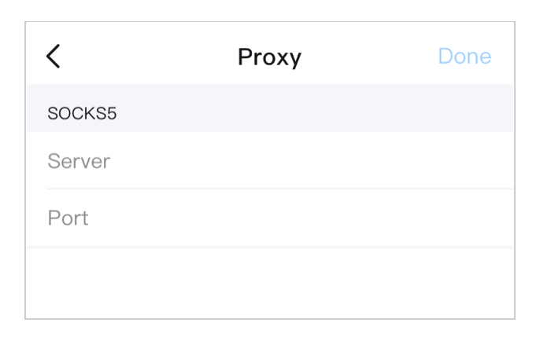
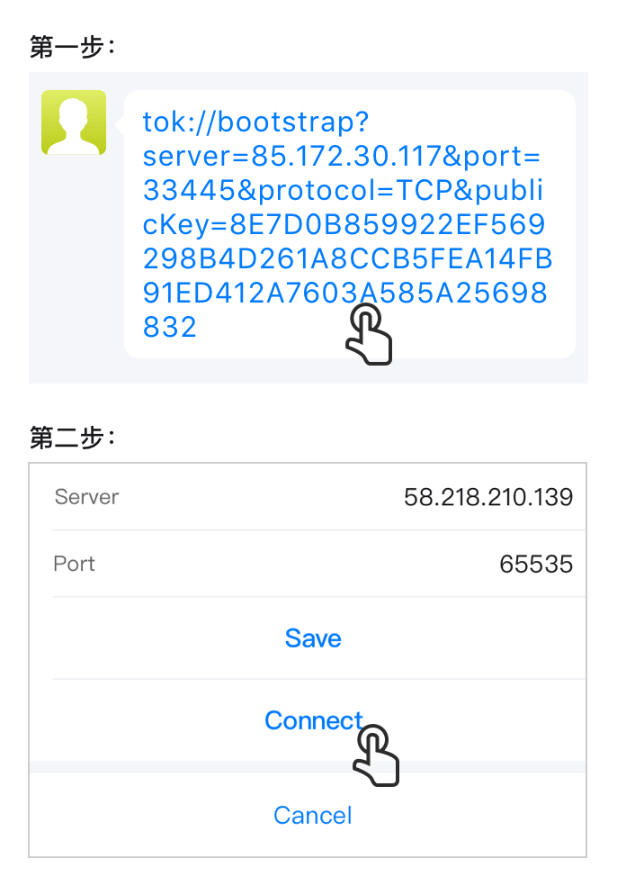
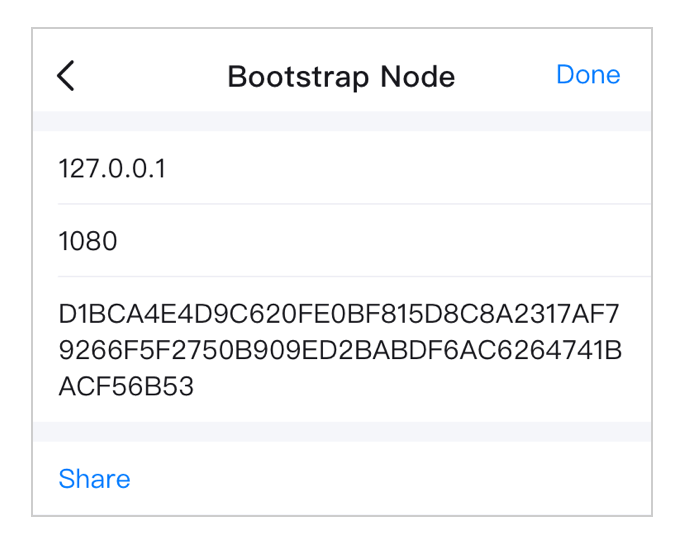

什么是UDP？
一种轻量级的网络传输协议，可以有效的防止封锁和加速网络传输，但可能会消耗更多的流量和电量。如果您的网络连接困难，我们建议开启UDP
如何设置代理？
代理是网络信息中转站，设置稳定的代理可以获取优质的网络连接
快速设置：
1、在会话框中点击好友分享给你的代理信息
2、点击“连接”即可

手动设置：
1、首先获取代理服务器的相关信息（自己搭建或从别人处获取）；
2、分别输入Server（IP地址或域名，一般是IP地址）和端口；
3、如果是需要验证身份的代理，请输入用户名和密码，如果不需要验证身份，请忽略；
4、点击“Done“完成设置

提示：
1、10s内无法连接将显示此代理不可用；
2、每次打开App将先尝试连接代理，如无效将使用系统默认网络；
3、有效的代理可以分享给更多的好友
如何设置引导节点
您的客户端如果要连接到分布式网络，至少需要连接到一个已经与分布式网络连接的其他节点，并要求该节点提供更多可以连接的节点，重复此过程以发现越来越多的节点，众多的节点在一起组成分布式网络。如果您的客户端在启动时不知道任何网络中的节点，则首先需要连接引导节点，因此引导节点是保证您能连接分布式网络的基础条件。
客户端中会缓存一些引导节点信息，并及时更新，但是配置更多有效的引导节点可以提高网络的稳定性
快速设置：
1、在会话框中点击好友分享给你的引导节点信息
2、点击“连接”即可

手动设置：
1、首先获取代引导节点的相关信息（自己搭建或从别人处获取）；
2、分别输入address（IP）、Port、PublicKey；
3、点击“Done“完成设置

提示：
1、支持配置多个引导节点
2、客户端启动时会首先尝试连接您配置的节点，全部失败后再尝试连接客户端缓存的引导节点